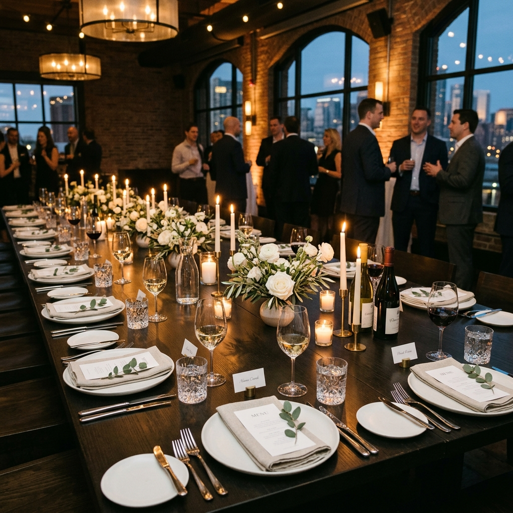

Operational Services
Administrative support engineered to restore focus and yield executive leverage.
Calendar & Scheduling
Management of your schedules, meetings, and focus buffers to protect your core working hours. I act as the gatekeeper of your time, ensuring you engage only with what deserves your attention.
- Multi-timezone calendar reconciliation
- Strategic gating and meeting qualification
- Client & partner scheduling coordination
- Buffers for focus, travel, and personal downtime
Travel Planning & Logistics
End-to-end management of complex domestic and international travel, ensuring every transfer, lodging, and route is confirmed well in advance — with contingency plans ready before you board.
- Flight booking and upgrade management
- Boutique lodging recommendations & reservations
- Ground transit and visa prep coordination
- Real-time itinerary monitoring and backups
Email & Correspondence
Inbox filtering and prioritization to surface critical matters and eliminate noise. I draft replies, manage follow-ups, and build the systems that keep your communications structured.
- Inbox categorization & spam removal
- Drafting replies, confirmations, and standard updates
- Highlighting urgent action items daily
- Building automated filters and template libraries
Meeting Prep & Minutes
Ensuring you enter every boardroom or briefing fully prepared, with clear context, participant research, and structured notes recorded for follow-through.
- Compiling research dossiers on meeting participants
- Agenda creation and distribution
- Detailed note-taking and transcript summarization
- Tracking deliverables and project action items
Project & Task Coordination
Acting as the coordinator between you and your team to keep key initiatives on track, without adding reporting burden to your plate.
- Task tracking in Asana, Notion, or Jira
- Following up on deadlines with team members
- Organizing assets, folders, and shared files
- Status reporting and bottleneck identification
Research & Reporting
Providing synthesized research briefs that give you the insight needed to make key decisions — without reviewing raw data yourself.
- Competitor tracking and sector monitoring
- Vendor vetting and pricing comparisons
- Travel or event venue option compilation
- Synthesized summary reports and executive briefings

Event Planning & Coordination
Coordinating board dinners, team offsites, and partner gatherings from concept through to the final handshake — every detail managed with discretion and precision.
- Venue sourcing, negotiation, and contract review
- Guest list tracking, RSVPs, and menu prep
- Vendor management (catering, AV, styling)
- On-site logistics coordination and timeline management
Partnership Framework
Support is structured as a dedicated monthly retainer. This model guarantees consistent availability, proactive management, and absolute operational continuity.
1. Operational Alignment Call
We begin with a 20-minute discovery call to map your current bottlenecks: email volume, meeting frequency, travel patterns, and direct report coordination.
2. Tailored Retainer Structuring
Based on your operational requirements, we agree on a monthly hours commitment. This capacity is reserved exclusively for you, ensuring priority response times and daily coverage.
3. Onboarding & Integration
A structured hand-off covering credentials, scheduling preferences, calendar gating rules, and communication protocols. We aim to have initial systems operational within 48 hours.